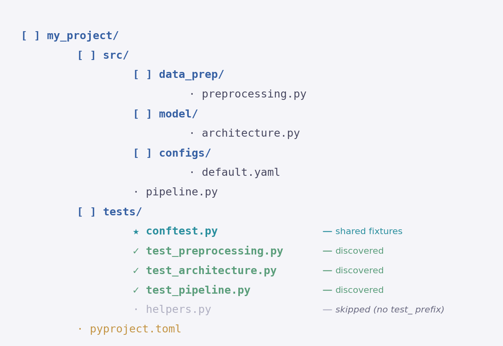
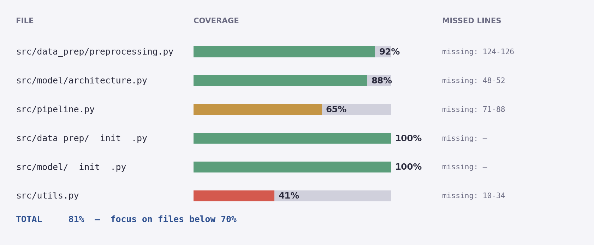

Building a safety net for your code — one assertion at a time
Module 4 · Gen AI Engineer Course
Testing is a skill every software engineer needs. Whatever framework you use, five ideas show up in every test suite — learn them once and every tutorial clicks.
They catch regressions when you change code and let you refactor without fear of silently breaking something.
Good tests verify intent and invariants. Bad tests pin down exact values that change with every run.
A tests/ folder that mirrors your source tree. Naming conventions let the framework find them.
You don't register tests. The framework walks the tree, runs everything, and reports pass or fail clearly.
Fixtures eliminate duplicated setup. Parametrisation runs one body against many inputs.
Coverage shows which lines your suite never executes — so you can decide whether to cover them.
Concepts first — what a framework is, where tests live, what you should and shouldn't test.
Python has several testing frameworks. The two you'll see most often are pytest and unittest. They do the same job with different styles.
unittest — ships with PythonNo install needed. Part of the Python standard library — available wherever Python is. Test style: classes inheriting TestCase, methods like assertEqual, assertRaises.
pytest — install with pip$ pip install pytest
Third-party package. Test style: plain functions + plain assert. Richer failure messages, huge plugin ecosystem. De-facto standard in modern Python.
Less ceremony, better failure output, and pytest can run unittest tests too — so you lose nothing by picking it. (We already added it to [project.optional-dependencies].dev in Class 07.)
Tests go in a top-level tests/ directory that mirrors your src/ layout. One test file per source file. A reader can immediately find the tests for any module.
my_project/ ├── pyproject.toml ├── src/ │ ├── data_prep/ │ │ └── preprocessing.py │ ├── model/ │ │ └── architecture.py │ └── pipeline.py └── tests/ ├── conftest.py # shared fixtures ├── test_preprocessing.py # tests for data_prep/preprocessing.py ├── test_architecture.py # tests for model/architecture.py └── test_pipeline.py # tests for pipeline.py
Test files start with test_. The rest mirrors the source file name — preprocessing.py becomes test_preprocessing.py. That convention isn't cosmetic: pytest uses it to auto-discover your tests.
The most common mistake is pinning down exact numbers. Good tests verify the behaviour of your code — not the specific values it happens to produce on your machine today.
None.Test the intent, not the implementation. If two correct implementations could pass the same test, your test is good. If changing the algorithm breaks the test even though the output is still correct, your test is too tight.
An overview, then how pytest discovers tests, then your first test — followed by a dedicated slide for each feature.
Beyond running assert statements, pytest ships with six features that keep large test suites readable and fast. Each one gets its own slide in this section — this is the map.
No registration. Name files and functions correctly; pytest walks the tree and finds them.
On a failed assert, pytest shows the expression, actual values, and exact line.
@pytest.fixture builds an object once; pytest injects it into any test that asks for it.
@pytest.mark.parametrize — same body, separate reported result per input.
Via pytest-cov — see which lines of your code the suite never executes.
pytest-cov, pytest-xdist, pytest-mock, and hundreds more.
You don't register tests anywhere. Name files and functions following the convention, put them under a tests/ directory, and pytest walks the tree to collect everything that matches.

test_*.py or *_test.pytest_*Test* (with methods test_*)test_*, using plain assert.assert can't do cleanly on its own:
with pytest.raises(Err): — expect a specific exception== pytest.approx(val) — compare floats with tolerancewith pytest.warns(Warn): — expect a warningTest* class — pure organisation, no inheritance.def add(a, b): return a + b def divide(a, b): if b == 0: raise ValueError("divide by zero") return a / b
import pytest from calculator import add, divide def test_add(): assert add(2, 3) == 5 def test_divide_by_zero_raises(): with pytest.raises(ValueError): divide(10, 0)
When an assert fails, pytest introspects the expression and shows the line, both values, and how each side was computed. No print() debugging.
# src/pricing.py — bug: + should be − def off(price, rate): return price + rate * price # tests/test_pricing.py def test_20_off(): assert off(100, 0.2) == 80
FAILED test_pricing.py::test_20_off > assert off(100, 0.2) == 80 E assert 120.0 == 80 E + where 120.0 = off(100, 0.2)
Three things pytest hands you for free: the expression, both values (120.0 vs 80), and how the value was computed — from a plain assert.
conftest.py — reusable setupTests need setup: a sample dataset, a configured object, a temp file. A fixture builds it once. Any test can ask for that fixture by listing it as a parameter, and pytest wires it in automatically.
def oldest(users): """Return the user with the highest age.""" return max(users, key=lambda u: u["age"])
import pytest @pytest.fixture def sample_users(): return [ {"name": "Alice", "age": 30}, {"name": "Bob", "age": 25}, {"name": "Carol", "age": 35}, ]
from users import oldest def test_oldest_user(sample_users): # pytest passes sample_users in result = oldest(sample_users) assert result["name"] == "Carol"
conftest.py?The filename is a pytest convention — it must be named conftest.py exactly. pytest walks the directory tree and auto-loads any conftest.py it finds. Fixtures defined there become available to every test in that directory (and its subdirectories) without an import.
When the same property should hold for several inputs, don't write near-identical tests. @pytest.mark.parametrize runs one body once per input and reports each case separately — same add function we wrote on slide 10, now tested against three input pairs.
import pytest from calculator import add @pytest.mark.parametrize("a, b, expected", [ (2, 3, 5), (0, 0, 0), (-1, 4, 3), ]) def test_add(a, b, expected): assert add(a, b) == expected
test_add[2-3-5] PASSED test_add[0-0-0] PASSED test_add[-1-4-3] PASSED 3 passed in 0.02s
One function, three independent runs. pytest labels each case with its inputs — if [-1-4-3] ever fails you see exactly which input broke the property.
Use fixtures for expensive setup (a database, a trained model) and parametrize for the varying inputs. A test function can take both.
Writing tests is good; knowing what you haven't tested is better. The pytest-cov plugin records which lines of your source code actually executed during the suite. Anything that didn't run is a blind spot.
$ pip install pytest-cov $ pytest --cov=src --cov-report=term-missing

100% coverage with weak assertions catches nothing. 70% coverage with sharp assertions on the critical paths catches real bugs. Use the Missing column to find uncovered error paths worth testing — don't chase the number.
pytest has a huge plugin ecosystem; install any of them with pip install <plugin> and they're picked up automatically. The CLI has a handful of flags you'll use every single day.
pytest-covCoverage measurement.
pytest-xdistRun tests in parallel across cores.
pytest-mockCleaner syntax for unittest.mock.
pytest-asyncioSupport for async def tests.
pytest-benchmarkTrack performance regressions.
pytest-randomlyShuffle test order each run.
pytest | run everything in tests/ |
pytest -v | verbose — one line per test |
pytest -x | stop on first failure |
pytest --lf | re-run only last-failing |
pytest -k "name" | filter by substring |
pytest file::test | run a single test |
pytest -s | show print() output |
pytest --cov=src | measure coverage |
test_* file, test_* function, plain assert. That's it.
Invariants and contracts — never exact values tied to randomness.
conftest.pyInject setup by name, zero imports, fresh instance per test.
One body, many inputs — separate reported pass/fail per case.
Find blind spots; don't chase 100%. Sharp asserts > weak coverage.
-x, --lf, -k, -v, --cov become muscle memory.